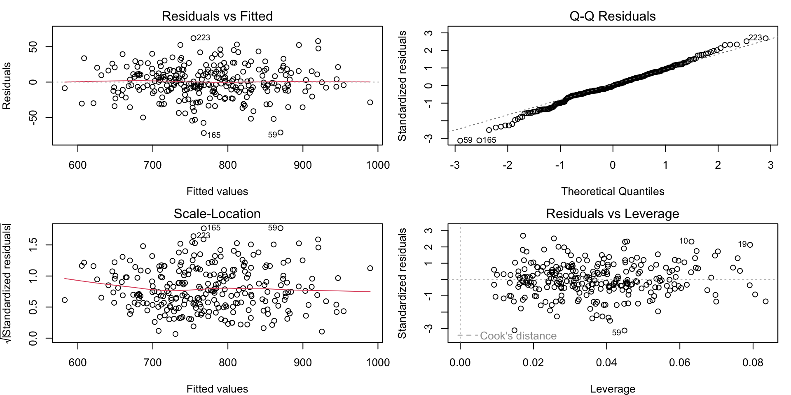
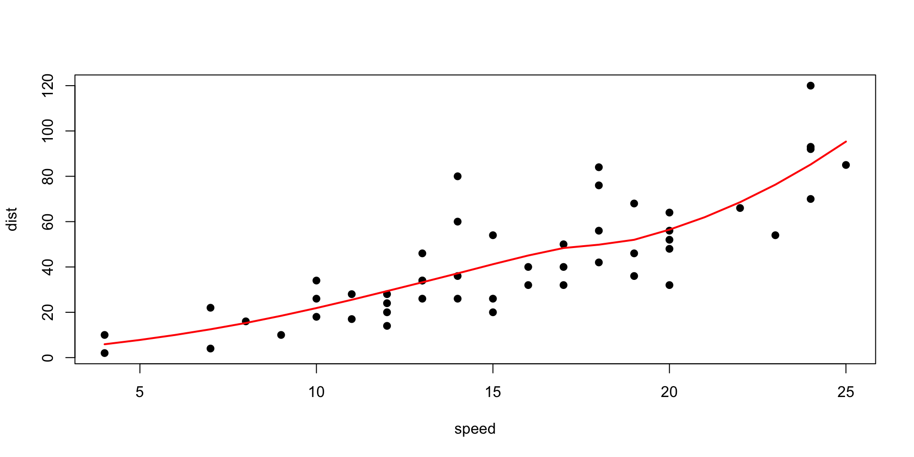
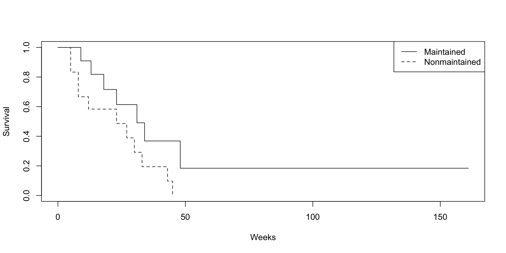

[1] "teamID" "yearID" "runs" "singles"
[5] "doubles" "triples" "homeruns" "walks"
[9] "stolenbases" "caughtstealing" "hitbypitch" "sacrificeflies"
[13] "atbats" 程式設計與應用
第二十章：迴歸模型
劉昱佑
實踐大學
2026-06-07
為關係建模
一個值得建模的問題
棒球隊的得分能由打擊數據解釋多少？2000–2008 年的球隊打擊資料，依課程慣例載入：
線性模型假設
\[\text{runs} = c_0 + c_1 x_1 + \cdots + c_n x_n + \varepsilon,\]
lm() 以最小平方法估計係數。
配適模型
Call:
lm(formula = runs ~ singles + doubles + triples + homeruns +
walks + hitbypitch + sacrificeflies + stolenbases + caughtstealing,
data = team.batting.00to08)
Coefficients:
(Intercept) singles doubles triples homeruns
-507.16020 0.56705 0.69110 1.15836 1.47439
walks hitbypitch sacrificeflies stolenbases caughtstealing
0.30118 0.37750 0.87218 0.04369 -0.01533 每個係數讀作「其餘不變下，多一單位帶來的額外得分」——一支全壘打約值三支一壘安打。
評估配適
Call:
lm(formula = runs ~ singles + doubles + triples + homeruns +
walks + hitbypitch + sacrificeflies + stolenbases + caughtstealing,
data = team.batting.00to08)
Residuals:
Min 1Q Median 3Q Max
-71.902 -11.828 -0.419 14.658 61.874
Coefficients:
Estimate Std. Error t value Pr(>|t|)
(Intercept) -507.16020 32.34834 -15.678 < 2e-16 ***
singles 0.56705 0.02601 21.801 < 2e-16 ***
doubles 0.69110 0.05922 11.670 < 2e-16 ***
triples 1.15836 0.17309 6.692 1.34e-10 ***
homeruns 1.47439 0.05081 29.015 < 2e-16 ***
walks 0.30118 0.02309 13.041 < 2e-16 ***
hitbypitch 0.37750 0.11006 3.430 0.000702 ***
sacrificeflies 0.87218 0.19179 4.548 8.33e-06 ***
stolenbases 0.04369 0.05951 0.734 0.463487
caughtstealing -0.01533 0.15550 -0.099 0.921530
---
Signif. codes: 0 '***' 0.001 '**' 0.01 '*' 0.05 '.' 0.1 ' ' 1
Residual standard error: 23.21 on 260 degrees of freedom
Multiple R-squared: 0.9144, Adjusted R-squared: 0.9114
F-statistic: 308.6 on 9 and 260 DF, p-value: < 2.2e-16依序看：殘差的散布、係數顯著性（星號），最後是 \(R^2\)——被解釋的變異比例。
診斷圖
plot(model) 產生標準四圖：

要找的訊號：Residuals vs. Fitted 的彎曲（非線性）、Q–Q 圖的偏離（誤差非常態）、Scale–Location 的漏斗（異質變異）、Leverage 的高影響點。
精煉模型
剔除弱項並比較巢狀模型：
Analysis of Variance Table
Model 1: runs ~ singles + doubles + triples + homeruns + walks + hitbypitch +
sacrificeflies
Model 2: runs ~ singles + doubles + triples + homeruns + walks + hitbypitch +
sacrificeflies + stolenbases + caughtstealing
Res.Df RSS Df Sum of Sq F Pr(>F)
1 262 140440
2 260 140078 2 362.56 0.3365 0.7146 df AIC
runs.mdl 11 2476.140
runs.mdl2 9 2472.838update()修改公式而不必重打。anova()檢定多出來的項是否值回票價；AIC/BIC在配適與複雜度間取捨。step(runs.mdl)以 AIC 自動搜尋。
lm 的細節
實用的引數與萃取器：
(Intercept) singles doubles triples
-506.6388774 0.5711526 0.6822661 1.1789353 1 2 3
-35.719379 -9.345620 -7.916084 fit lwr upr
1 899.7194 853.4491 945.9896
2 803.3456 757.4048 849.2865confint()、fitted()、model.matrix() 補齊這套萃取工具。
穩健與抗性迴歸
離群值能把最小平方法拖去任何地方。穩健方法會調降它們的權重：
(Intercept) singles doubles triples homeruns walks
-501.236 0.593 0.739 1.211 1.530 0.318 rlm()——M 估計（MASS）；lqs()——least trimmed squares 等抗性配適。- 穩健配適與普通配適差很大時，先調查高影響觀測值，再決定相信誰。
子集選擇與收縮
預測變數多且相關時，三種策略控制變異：
- 子集選擇：
step()，或leaps套件的窮舉搜尋。 - 脊迴歸：保留所有項、收縮係數（\(L_2\) 懲罰）——
MASS的lm.ridge()。 - Lasso：又收縮又選擇（\(L_1\) 懲罰）——
glmnet套件能有效率地算出整條正則化路徑。
主成分迴歸與偏最小平方迴歸（pls 套件）是投影法的表親。
廣義線性模型
glm() 透過連結函數與誤差家族擴充線性模型——計數、比率、機率共用一個介面：
Estimate Std. Error z value Pr(>|z|)
(Intercept) -0.04133056 0.5588550 -0.07395579 9.410456e-01
exposure 0.45144078 0.1142353 3.95184880 7.754973e-05gaussian重現lm()；poisson建模計數；binomial是邏輯斯迴歸（第二十一章）。- 係數活在連結尺度上——Poisson／logit 係數要取指數才好詮釋。
非線性與平滑模型
關係真的彎曲時：

nls()配適參數式非線性曲線（公式與起始值由你提供）。loess()局部多項式；smooth.spline()懲罰式樣條；mgcv::gam()完整的廣義可加模型。
存活模型
含設限的事件時間資料用 survival 套件：

survfit()——Kaplan–Meier 曲線；survdiff()——log-rank 檢定；coxph()——Cox 比例風險迴歸。Surv(time, status)物件編碼設限；忽略設限會讓一切結果偏誤。
一份建模食譜
- 先畫圖（第十三～十五章）；猜函數形式。
- 用
lm()/glm()配適最簡單的合理模型。 - 診斷：
plot(model)、殘差、影響度。 - 精煉：轉換、增刪項，或正則化。
- 在保留資料上驗證（第二十二章的紀律）。
- 用
confint()報告效果量，別只報星號 (Hastie et al. 2009)。
版權聲明
版權聲明。 本教材改編自 Joseph Adler 所著 R in a Nutshell: A Desktop Quick Reference（第二版，O’Reilly Media）。所有權利均由原作者與出版者保留。
僅供非商業用途。 本教材嚴格限定用於教育目的，不得用於商業獲利。
適當標註出處。 任何對本教材的重製、散布或使用，都必須適當標註原始出處。

R in a Nutshell: A Desktop Quick Reference